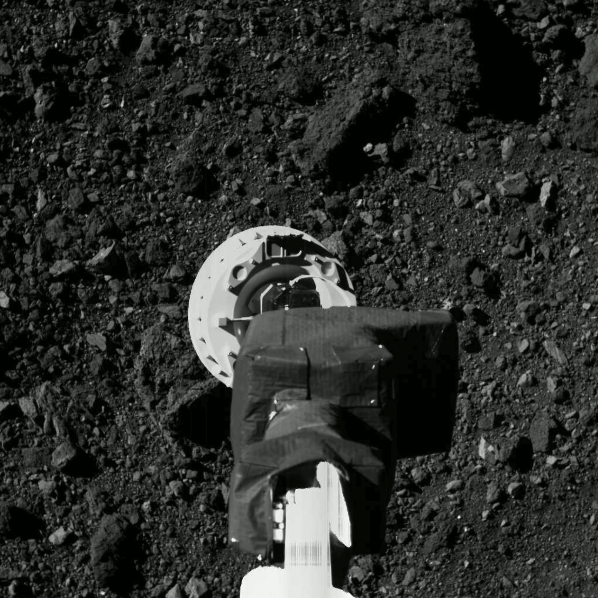

Near-Earth asteroid mining
In the 2030s emerging crewed-lunar bases and human exploration of Mars begin to justify the usefulness of mining resources in-space (rather than heavy industrial mining and costly launches on Earth). Evidence suggests trillions of dollars worth of precious metals and stores of iron, nickel and cobalt, larger than our global metal reserves, could be found on near-Earth asteroids, and will enable the in-space supply market.
In the 2020s we observed NASA’s OSIRIS-REx spacecraft land on an asteroid and NASA's Perseverance rover collect the first Mars rock sample (demonstrating remote drilling and collection). By the 2030s, technologies that enabled frequent, economical lunar landers and lunar mining are now leveraged to perform asteroid prospecting and robotic mining installations. Large-capacity fuel depots enable existing launch providers to further focus on delivering heavy mining equipment to orbit, rather than the propellant to transport them from Earth to the asteroid.
The OSIRIS-REx spacecraft approaches asteroid Bennu’s surface. Credits: NASA/Goddard/University of Arizona